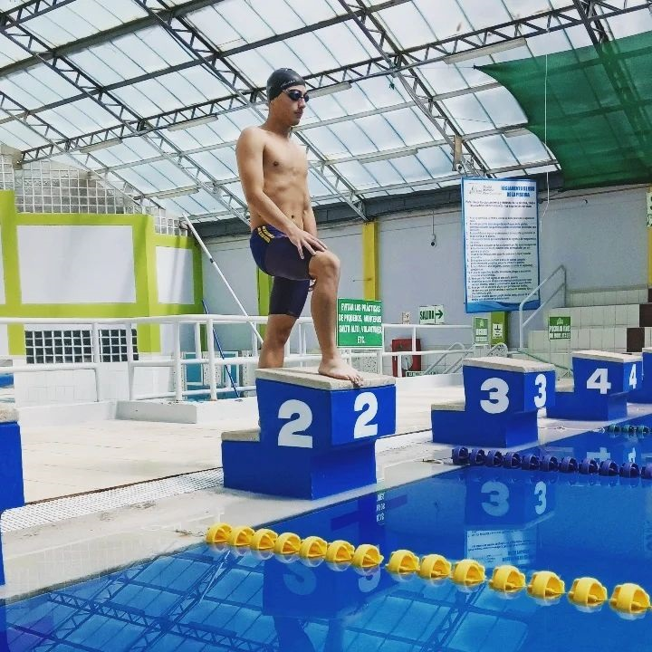

Bienvenidos a Sport Center© Cusco en esta ocasión nos complace presentarles una iniciativa que nos ha impulsado durante años, la natación. Una inspiración, disciplina y estilo de vida para muchos, esperamos que este sitio te motive a dar lo mejor de ti para empieces a cambiar tu vida a un entorno más saludable, activa y emocionante.
Nuestra Inspiracion
Nos apasiona enseñar a personas de todas las edades la belleza de nadar. Estamos orgullosos de comenzar en Cusco, donde queremos darle valor a la natación, ya que tiene enormes beneficios físicos y mentales.
Nuestro reto es hacer que la natación sea reconocida en Cusco y en todo el Perú, convirtiendo a cada nadador en un profesional excepcional. Creemos que la natación va más allá de ser un deporte, es una disciplina que fortalece el cuerpo y conecta con el ser interior.
Desde niños hasta adultos, hemos visto cómo la natación cambia vidas, fomentando un estilo de vida saludable. Nuestro sueño es que nuestros nadadores destaquen a nivel nacional e internacional.
Únete a nuestra comunidad acuática y descubre el potencial que la natación puede ofrecerte. ¡Te esperamos en nuestra emocionante travesía hacia un futuro acuático brillante!
Nuestra Formacion
En Sport Center, nos dedicamos a perfeccionar todos los estilos de natación, incluyendo el estilo libre, espalda, pecho y mariposa. Entendemos que algunos de nuestros estudiantes pueden encontrar ciertos estilos más desafiantes que otros.
Sin embargo, nuestro enfoque está en proporcionar una formación accesible y efectiva. Nuestros experimentados profesores utilizan una estrategia pedagógica que se caracteriza por su simplicidad y organización.
Explicamos de manera estructurada los movimientos clave necesarios para dominar cada estilo de natación. Creemos firmemente que todos pueden aprender a nadar, y nuestro compromiso es brindar las herramientas y la guía necesarias para que cada estudiante alcance su máximo potencial en el agua.
No importa si eres un principiante que está dando sus primeros pasos en el mundo de la natación o un nadador experimentado que busca mejorar su técnica; nuestro enfoque de enseñanza está diseñado para adaptarse a tus necesidades individuales.
Conoce a Nuestro Maestros
Su nombre es Doulgas Alberto Araujo Jaspe venezolano y nadador, es experto en los cuatro estilos de nado y ha competido en diversos eventos no solo en Venezuela pero en Peru tambien, pais donde actualmente reside y
enseña natacion a todos sus alumnos de una manera muy dinamica y creativa.
A su nombre, tiene mas de 320 medallas ganadas en competencias de diversas categorias y de ambos paises en los que ha competido.
 Su hermano, Douglas Alejandro Araujo Jaspe tambien nadador y venezonalo es tambien un profesor de excelencia en todos los estilos quien tambien cuenta con experiencia en competencias de diversas categorias y estilos,
residente de Peru y padre de familia, este grandioso profesor de natacion nunca tendra dudas en conseguir la mejor tecnica para enseñarle a sus estudiantes.
Su hermano, Douglas Alejandro Araujo Jaspe tambien nadador y venezonalo es tambien un profesor de excelencia en todos los estilos quien tambien cuenta con experiencia en competencias de diversas categorias y estilos,
residente de Peru y padre de familia, este grandioso profesor de natacion nunca tendra dudas en conseguir la mejor tecnica para enseñarle a sus estudiantes.
Se le atribuyen mas de 300 medallas ganadas en competencias entre Venezuela y Peru convitiendolo asi en un personaje con una basta experiencia para repartir.